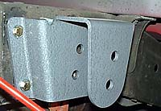
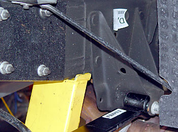
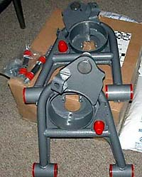

|
lowering kits |
|
If you want to just lower the truck without
increasing its handling further, there are a lot of options.
Ground Force Performance, Ford Racing, Belltech, Western Chassis, DJM,
and many other vendors sell such kits. A comparison of some of the
available options may be found
here.
Most of the available lowering kits do not increase the spring rates, so the "ride quality" remains roughly the same. Another advantage to these "lowering kits" is the ability to retain the stock shocks if the drop is limited to 2" or so. Stiff springs will overpower the stock Bilsteins and, if lowered, put the shocks outside of their intended range of travel. Most of these kits use longer rear shackles to drop the rear, which has been reported to increase the tendency of the rear axle to wander under hard cornering (which can be fixed with a panhard bar). For more than a 2" rear drop, the front hangers are replaced. Most who have done it report that it is an incredibly difficult job and that they would probably take it to a shop the next time.   For the front, most "lowering kits" use relatively soft springs (about the same as stock). Another option is are the 2" drop a-arms from Western Chassis (pictured to the left) and DJM, which, while expensive ($500-650), may allow the use of the stock front springs. They also have urethane bushings pre-installed. |